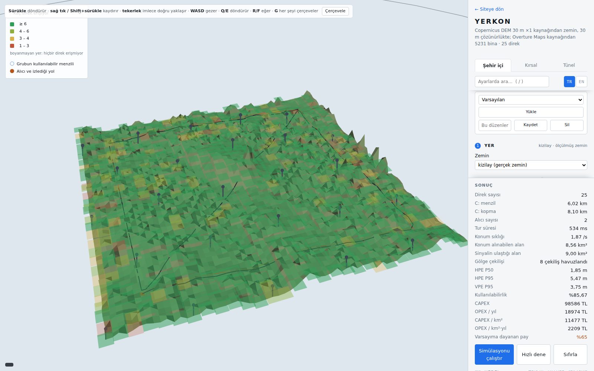

The simulation
The simulation is one part of this project rather than the whole of it. It had one job: to fill the three YERKON rows of the comparison table with a model whose every number can be traced, instead of with an estimate. It is not a field measurement.

The ground is real
- All three rows stand on real ground near Ankara, fetched once from the Copernicus 30 m DEM and baked into the package, so a clone reproduces the table without touching the network.
- The city is Kızılay, three kilometres on a side with 91 m of rise and fall. The open country is the Polatlı plain, twenty kilometres on a side with 486 m of relief. The tunnel is a real two kilometre bore through the mountains at Kızılcahamam.
- Nowhere is there a flat option. A flat plane is not the most neutral surface this model can draw, it is the most flattering one.
One calculation decides a link
- There is no maximum range constant anywhere. Range is a result rather than an input, and the same calculation decides both whether a link closes and how precisely it measures.
- The two ray ground reflection works even over flat ground: past the break distance the direct ray and the reflected one arrive out of phase and cancel, and because that distance scales with antenna height, mounting low is expensive.
- Diffraction comes from the whole profile rather than from its worst single point: ITU-R P.526-15 §4.5.2, delta Bullington. A link across Kızılay has three obstacles at the median and sixteen at the worst.
- The ground profile is read every ten metres. At a fixed 64 samples a 6,9 km rural link was read every 108 m, and it put diffraction at 31,28 dB where the answer is 37,60.
- A link pays the larger of reflection and diffraction rather than their sum. Both describe what the same piece of ground does to the same link, and adding them bills that ground twice.
- Shadowing sits on top of both, and its width depends on whether the path is clear: 4 dB with line of sight, 7,82 without (3GPP TR 38.901). The table pools eight draws rather than showing one.
The exchange and the estimator
- A range is not read off a link budget. Two radios exchange frames, and on the SX1280 at SF10 one two way exchange takes 47,86 ms.
- A round against six units takes 239 ms. A car doing 100 km/h covers 6,7 m in that time, so the ranges in one round are not simultaneous and are not solved as though they were.
- The estimator never sees the truth. It sees observations: a measured distance, a unit's surveyed position, a timestamp and a variance.
- There is no height constraint anywhere. Units strung along a roadside leave the vertical barely observable, and the VPE column reports that instead of hiding it.
Three errors that are not noise
- A blocked path measures long. The signal goes over the obstacle and the range times that detour. The error is always positive, so averaging never removes it.
- A survey error belongs to an installation, drawn once per unit and kept. The tunnel's HPE P50 is 0,24 m with perfect survey and 1,76 m with 15 cm of it: you cannot position better than you surveyed.
- A lost packet produces nothing. The band is shared with 2,4 GHz wireless networks: 15% loss in the city, 5% on the open road, none in the tunnel.
What is left out
- No inertial unit, no odometry, no map constraint, no Kalman fusion. The report's architecture calls for them; these numbers are free 3D fixes solved from radio ranging alone.
- Phase noise, multipath and drift during an exchange are not modelled.
- There is no waveguide term in the tunnel, so that row understates what a real bore delivers.
- The security layer is absent too. Signature checking and key management belong to the architecture rather than to the simulation.
On your own machine
The simulation does not live inside a web page. A run keeps three processors busy for minutes and reads real terrain data. Four commands install it, and on the page it opens every setting is live: units are dragged by hand, new ground is fetched, and all three rows run again.
git clone https://github.com/ysoktar/yerkon
cd yerkon
pip install -e ".[dev]"
yerkon view